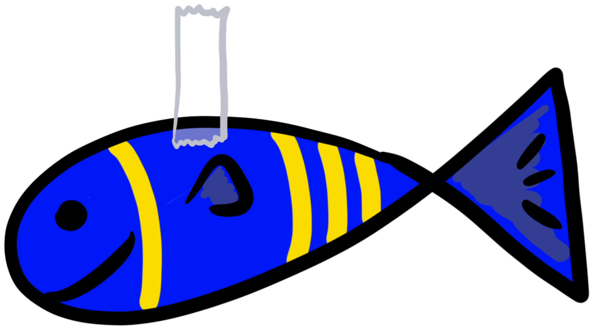
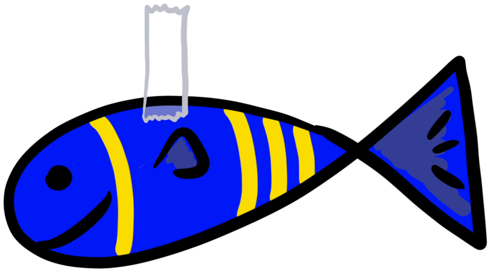

Spreadshirt - Designs pour vêtements
Mise à jour du 26 octobre 2022
Il y a eu de nouveaux motifs en début d’année. Je les ajoute ici aujourd’hui !
Le lapin a été décliné en plusieurs couleurs.
Le pauvre petit carlin est seul et fier de l’être, car il faut bien célébrer les célibataires aussi. Il existe aussi avec le message en anglais « Alone and fine. Thanks ! »
Ces deux illustrations sont reprises d’un défi artistique.
 



Mise à jour du 8 février 2021
De nouveaux motifs débarquent !
Les trois derniers capybaras sont les premiers que j’ai réalisés pour un concours sur le site. Ils n’ont pas gagnés, mais ils sont chouettes.
Mise à jour du 26 janvier 2021
Petite mise à jour de cet article : j’ai réalisé quelques motifs supplémentaires sur le thème des animaux rigolos. Certains adoptent une certaine philosophie de vie, ce qui suit le thème que je m’étais initialement décidée à suivre.
Le gros capybara rigolo est ma meilleure vente depuis le début. Étonnant, non ?
Article du 23 mars 2020
Petit article rapide uniquement pour indiquer le site où je poste des motifs de vêtements Spreadshirt. J’essaie de réaliser des designs amusants, percutants et qu’il serait agréable d’exposer sur soi, sur un tshirt par exemple. J’aimerais suivre des thèmes, comme celui des messages philosophiques que j’ai commencé à aborder.
Les silhouettes d’animaux pensifs sont déclinées en latin et français.